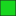
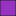

<!doctype html>
<html lang="en">
    <head>
        <meta charset="utf-8">
        <meta http-equiv="X-UA-Compatible" content="IE=edge">
        <meta name="viewport" content="initial-scale=1,user-scalable=no,maximum-scale=1,width=device-width">
        <meta name="mobile-web-app-capable" content="yes">
        <meta name="apple-mobile-web-app-capable" content="yes">
        <link rel="stylesheet" href="css/leaflet.css"><link rel="stylesheet" href="css/L.Control.Locate.min.css">
        <link rel="stylesheet" href="css/qgis2web.css"><link rel="stylesheet" href="css/fontawesome-all.min.css">
        <link rel="stylesheet" href="css/leaflet-search.css">
        <link rel="stylesheet" href="css/leaflet-control-geocoder.Geocoder.css">
        <style>
        html, body, #map {
            width: 100%;
            height: 100%;
            padding: 0;
            margin: 0;
        }
        </style>
        <title>Layout Prototype</title>
    </head>
    <body>
        <div id="map">
        </div>
        <script src="js/qgis2web_expressions.js"></script>
        <script src="js/leaflet.js"></script><script src="js/L.Control.Locate.min.js"></script>
        <script src="js/leaflet.rotatedMarker.js"></script>
        <script src="js/leaflet.pattern.js"></script>
        <script src="js/leaflet-hash.js"></script>
        <script src="js/Autolinker.min.js"></script>
        <script src="js/rbush.min.js"></script>
        <script src="js/labelgun.min.js"></script>
        <script src="js/labels.js"></script>
        <script src="js/leaflet-control-geocoder.Geocoder.js"></script>
        <script src="js/leaflet-search.js"></script>
        <script src="data/Parcels_1.js"></script>
        <script src="data/Boundary_2.js"></script>
        <script>
        var highlightLayer;
        function highlightFeature(e) {
            highlightLayer = e.target;

            if (e.target.feature.geometry.type === 'LineString') {
              highlightLayer.setStyle({
                color: '#ffff00',
              });
            } else {
              highlightLayer.setStyle({
                fillColor: '#ffff00',
                fillOpacity: 1
              });
            }
        }
        var map = L.map('map', {
            zoomControl:true, maxZoom:28, minZoom:1
        }).fitBounds([[6.475318068963864,3.635339142740047],[6.481110215079495,3.6469198520829735]]);
        var hash = new L.Hash(map);
        map.attributionControl.setPrefix('<a href="https://github.com/tomchadwin/qgis2web" target="_blank">qgis2web</a> &middot; <a href="https://leafletjs.com" title="A JS library for interactive maps">Leaflet</a> &middot; <a href="https://qgis.org">QGIS</a>');
        var autolinker = new Autolinker({truncate: {length: 30, location: 'smart'}});
        L.control.locate({locateOptions: {maxZoom: 19}}).addTo(map);
        var bounds_group = new L.featureGroup([]);
        function setBounds() {
        }
        map.createPane('pane_OSMStandard_0');
        map.getPane('pane_OSMStandard_0').style.zIndex = 400;
        var layer_OSMStandard_0 = L.tileLayer('http://tile.openstreetmap.org/{z}/{x}/{y}.png', {
            pane: 'pane_OSMStandard_0',
            opacity: 1.0,
            attribution: '<a href="https://www.openstreetmap.org/copyright">© OpenStreetMap contributors, CC-BY-SA</a>',
            minZoom: 1,
            maxZoom: 28,
            minNativeZoom: 0,
            maxNativeZoom: 19
        });
        layer_OSMStandard_0;
        map.addLayer(layer_OSMStandard_0);
        function pop_Parcels_1(feature, layer) {
            layer.on({
                mouseout: function(e) {
                    for (i in e.target._eventParents) {
                        e.target._eventParents[i].resetStyle(e.target);
                    }
                },
                mouseover: highlightFeature,
            });
            var popupContent = '<table>\
                    <tr>\
                        <td colspan="2"><strong>Land Use</strong><br />' + (feature.properties['Land Use'] !== null ? autolinker.link(feature.properties['Land Use'].toLocaleString()) : '') + '</td>\
                    </tr>\
                    <tr>\
                        <td colspan="2"><strong>Land Area </strong><br />' + (feature.properties['Land Area '] !== null ? autolinker.link(feature.properties['Land Area '].toLocaleString()) : '') + '</td>\
                    </tr>\
                    <tr>\
                        <td colspan="2"><strong>Status</strong><br />' + (feature.properties['Status'] !== null ? autolinker.link(feature.properties['Status'].toLocaleString()) : '') + '</td>\
                    </tr>\
                    <tr>\
                        <td colspan="2"><strong>PID</strong><br />' + (feature.properties['PID'] !== null ? autolinker.link(feature.properties['PID'].toLocaleString()) : '') + '</td>\
                    </tr>\
                </table>';
            layer.bindPopup(popupContent, {maxHeight: 400});
        }

        function style_Parcels_1_0(feature) {
            switch(String(feature.properties['Land Use'])) {
                case 'Buffer':
                    return {
                pane: 'pane_Parcels_1',
                opacity: 1,
                color: 'rgba(35,35,35,1.0)',
                dashArray: '',
                lineCap: 'butt',
                lineJoin: 'miter',
                weight: 1.0, 
                fill: true,
                fillOpacity: 1,
                fillColor: 'rgba(24,215,31,1.0)',
                interactive: true,
            }
                    break;
                case 'commercial':
                    return {
                pane: 'pane_Parcels_1',
                opacity: 1,
                color: 'rgba(35,35,35,1.0)',
                dashArray: '',
                lineCap: 'butt',
                lineJoin: 'miter',
                weight: 1.0, 
                fill: true,
                fillOpacity: 1,
                fillColor: 'rgba(31,120,180,1.0)',
                interactive: true,
            }
                    break;
                case 'Green':
                    return {
                pane: 'pane_Parcels_1',
                opacity: 1,
                color: 'rgba(35,35,35,1.0)',
                dashArray: '',
                lineCap: 'butt',
                lineJoin: 'miter',
                weight: 1.0, 
                fill: true,
                fillOpacity: 1,
                fillColor: 'rgba(24,215,31,1.0)',
                interactive: true,
            }
                    break;
                case 'Institutional':
                    return {
                pane: 'pane_Parcels_1',
                opacity: 1,
                color: 'rgba(35,35,35,1.0)',
                dashArray: '',
                lineCap: 'butt',
                lineJoin: 'miter',
                weight: 1.0, 
                fill: true,
                fillOpacity: 1,
                fillColor: 'rgba(248,0,0,1.0)',
                interactive: true,
            }
                    break;
                case 'Mixed':
                    return {
                pane: 'pane_Parcels_1',
                opacity: 1,
                color: 'rgba(35,35,35,1.0)',
                dashArray: '',
                lineCap: 'butt',
                lineJoin: 'miter',
                weight: 1.0, 
                fill: true,
                fillOpacity: 1,
                fillColor: 'rgba(151,50,194,1.0)',
                interactive: true,
            }
                    break;
                case 'Residential':
                    return {
                pane: 'pane_Parcels_1',
                opacity: 1,
                color: 'rgba(35,35,35,1.0)',
                dashArray: '',
                lineCap: 'butt',
                lineJoin: 'miter',
                weight: 1.0, 
                fill: true,
                fillOpacity: 1,
                fillColor: 'rgba(253,226,23,1.0)',
                interactive: true,
            }
                    break;
                case 'Road':
                    return {
                pane: 'pane_Parcels_1',
                stroke: false, 
                fill: true,
                fillOpacity: 1,
                fillColor: 'rgba(147,146,148,1.0)',
                interactive: true,
            }
                    break;
                case 'water':
                    return {
                pane: 'pane_Parcels_1',
                stroke: false, 
                fill: true,
                fillOpacity: 1,
                fillColor: 'rgba(170,211,223,1.0)',
                interactive: true,
            }
                    break;
            }
        }
        map.createPane('pane_Parcels_1');
        map.getPane('pane_Parcels_1').style.zIndex = 401;
        map.getPane('pane_Parcels_1').style['mix-blend-mode'] = 'normal';
        var layer_Parcels_1 = new L.geoJson(json_Parcels_1, {
            attribution: '',
            interactive: true,
            dataVar: 'json_Parcels_1',
            layerName: 'layer_Parcels_1',
            pane: 'pane_Parcels_1',
            onEachFeature: pop_Parcels_1,
            style: style_Parcels_1_0,
        });
        bounds_group.addLayer(layer_Parcels_1);
        map.addLayer(layer_Parcels_1);
        function pop_Boundary_2(feature, layer) {
            layer.on({
                mouseout: function(e) {
                    for (i in e.target._eventParents) {
                        e.target._eventParents[i].resetStyle(e.target);
                    }
                },
                mouseover: highlightFeature,
            });
            var popupContent = '<table>\
                    <tr>\
                        <td colspan="2">' + (feature.properties['Id'] !== null ? autolinker.link(feature.properties['Id'].toLocaleString()) : '') + '</td>\
                    </tr>\
                </table>';
            layer.bindPopup(popupContent, {maxHeight: 400});
        }

        function style_Boundary_2_0() {
            return {
                pane: 'pane_Boundary_2',
                opacity: 1,
                color: 'rgba(0,0,0,1.0)',
                dashArray: '',
                lineCap: 'round',
                lineJoin: 'round',
                weight: 3.0,
                fillOpacity: 0,
                interactive: false,
            }
        }
        map.createPane('pane_Boundary_2');
        map.getPane('pane_Boundary_2').style.zIndex = 402;
        map.getPane('pane_Boundary_2').style['mix-blend-mode'] = 'normal';
        var layer_Boundary_2 = new L.geoJson(json_Boundary_2, {
            attribution: '',
            interactive: false,
            dataVar: 'json_Boundary_2',
            layerName: 'layer_Boundary_2',
            pane: 'pane_Boundary_2',
            onEachFeature: pop_Boundary_2,
            style: style_Boundary_2_0,
        });
        bounds_group.addLayer(layer_Boundary_2);
        map.addLayer(layer_Boundary_2);
            var title = new L.Control();
            title.onAdd = function (map) {
                this._div = L.DomUtil.create('div', 'info');
                this.update();
                return this._div;
            };
            title.update = function () {
                this._div.innerHTML = '<h2>Layout Prototype</h2>';
            };
            title.addTo(map);
            var abstract = new L.Control({'position':'bottomleft'});
            abstract.onAdd = function (map) {
                this._div = L.DomUtil.create('div',
                'leaflet-control abstract');
                this._div.id = 'abstract'

                    abstract.show();
                    return this._div;
                };
                abstract.show = function () {
                    this._div.classList.remove("abstract");
                    this._div.classList.add("abstractUncollapsed");
                    this._div.innerHTML = 'This is a prototype design for a web-based layout. It is expected to facilitate ease in the identification of a potential property to be acquired before the need to visit the site in person.';
            };
            abstract.addTo(map);
        var osmGeocoder = new L.Control.Geocoder({
            collapsed: true,
            position: 'topleft',
            text: 'Search',
            title: 'Testing'
        }).addTo(map);
        document.getElementsByClassName('leaflet-control-geocoder-icon')[0]
        .className += ' fa fa-search';
        document.getElementsByClassName('leaflet-control-geocoder-icon')[0]
        .title += 'Search for a place';
        var baseMaps = {};
        L.control.layers(baseMaps,{' Boundary': layer_Boundary_2,'Parcels<br /><table><tr><td style="text-align: center;"></td><td>Buffer</td></tr><tr><td style="text-align: center;"></td><td>commercial</td></tr><tr><td style="text-align: center;"></td><td>Green</td></tr><tr><td style="text-align: center;"></td><td>Institutional</td></tr><tr><td style="text-align: center;"></td><td>Mixed</td></tr><tr><td style="text-align: center;"></td><td>Residential</td></tr><tr><td style="text-align: center;"></td><td>Road</td></tr><tr><td style="text-align: center;"></td><td>water</td></tr></table>': layer_Parcels_1,"OSM Standard": layer_OSMStandard_0,}).addTo(map);
        setBounds();
        var i = 0;
        layer_Parcels_1.eachLayer(function(layer) {
            var context = {
                feature: layer.feature,
                variables: {}
            };
            layer.bindTooltip((layer.feature.properties['PID'] !== null?String('<div style="color: #323232; font-size: 7pt; font-family: \'Arial\', sans-serif;">' + layer.feature.properties['PID']) + '</div>':''), {permanent: true, offset: [-0, -16], className: 'css_Parcels_1'});
            labels.push(layer);
            totalMarkers += 1;
              layer.added = true;
              addLabel(layer, i);
              i++;
        });
        map.addControl(new L.Control.Search({
            layer: layer_Parcels_1,
            initial: false,
            hideMarkerOnCollapse: true,
            propertyName: 'PID'}));
        document.getElementsByClassName('search-button')[0].className +=
         ' fa fa-binoculars';
        resetLabels([layer_Parcels_1]);
        map.on("zoomend", function(){
            resetLabels([layer_Parcels_1]);
        });
        map.on("layeradd", function(){
            resetLabels([layer_Parcels_1]);
        });
        map.on("layerremove", function(){
            resetLabels([layer_Parcels_1]);
        });
        </script>
    </body>
</html>
